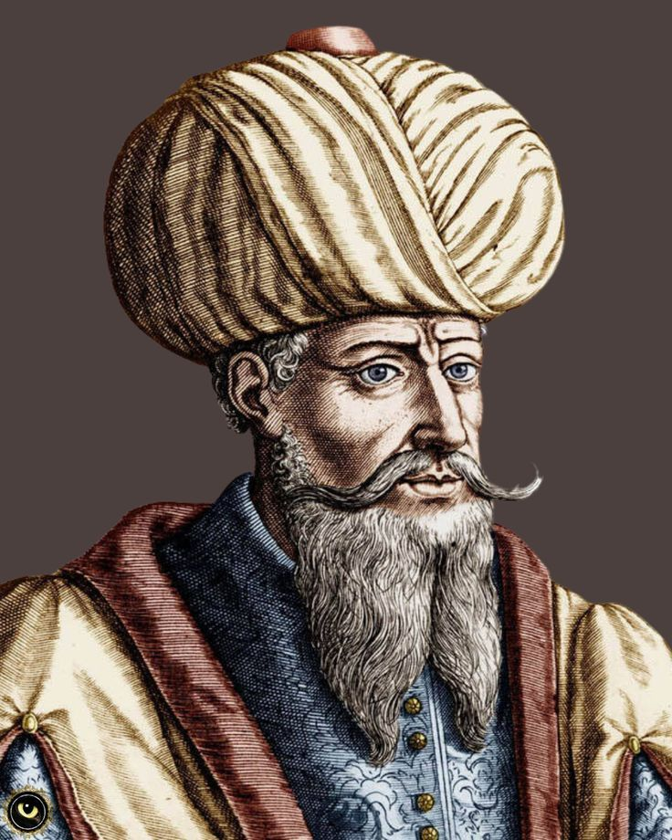

Mahoma
¿Quien es?
Mahoma (en árabe, Muhammad) fue un líder religioso, político y militar nacido alrededor del año 570 d.C. en La Meca (actual Arabia Saudita). Es el fundador del islam y es considerado por los musulmanes como el último profeta enviado por Dios (Alá) para guiar a la humanidad, completando el mensaje transmitido por profetas anteriores como Abraham, Moisés y Jesús.
Mahoma unificó a las tribus árabes bajo una sola religión, el islam, y estableció una comunidad musulmana que creció rápidamente durante y después de su vida.
|  |
| Nacimiento: | aprox. 570 D.C. en La Meca. |
| Revelaciones: | A los 40 años, comenzó a recibir revelaciones del arcángel Gabriel,
que más tarde fueron recopiladas en el Corán, el libro sagrado del islam. |
| Hégira (622 d.C.): | Emigró de La Meca a Medina, evento que marca el inicio del calendario islámico. |
| Muerte: | 632 d.C. en Medina. |
Resumen breve en cada aspecto
- Vida personal de Mahoma
- Origen humilde: Nació huérfano en una tribu llamada los Quraish. Fue criado por su abuelo y luego por su tío.
- Trabajo: Trabajó como comerciante. Su honestidad le dio el apodo de Al-Amín ("el confiable").
- Matrimonio: Se casó con Jadiya, una viuda rica, con quien tuvo varios hijos. Ella fue su primera seguidora.
- Carácter: Era conocido por su humildad, honestidad y compasión.
- Enseñanzas principales
- Monoteísmo: Solo hay un Dios (Alá), y Mahoma es su profeta.
- Cinco pilares del islam:
- Profesión de fe (shahada)
- Oración (salat)
- Ayuno en Ramadán (sawm)
- Limosna (zakat)
- Peregrinación a La Meca (hajj)
- Ética: Justicia, compasión, respeto a los padres, prohibición del robo, mentira y asesinato.